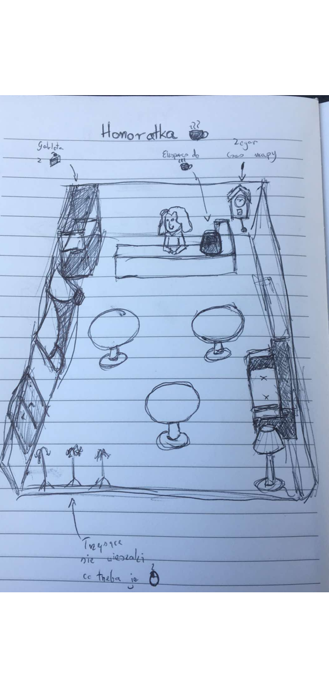

Honoratka
In the 1950s and 1960s, frequenting the "Honoratka" café wasn't just about snobbery and fashion – it was an existential obligation for every actor, director, and student to find at least five minutes every day for a quick coffee and a homemade cake made by Mrs. Stefania Brudzińska.
About the game
Honoratka is a casual simulation game about running a café in Łódź. In the game, the player, playing as Stefania, the café's owner, not only ensures the quality of food served to her customers but also indirectly develops Polish cinema by allowing outstanding filmmakers and rising stars to meet and collaborate on projects.
In Honoratka, the player seats artists at tables so they can create memorable works; strong characters cannot be allowed to clash. Player learns the stories of outstanding filmmakers and cinematic masterpieces. The game was created as part of the Advanced Computer Games course at the Lodz University of Technology and required the use of Unreal Engine 5 and the game to be culturally engaged with the city of Lodz.
Screenshots


My Contributions
As a designer, I was more involved in the creative part of the project, but I also implemented some of the mechanics and visuals myself.
Gameplay Programming
- Set camera
- Speach bubble shader
- Falling coat rack mechanic
- Characters outline marking mechanic
- Shining objects on hover
- Bug fixes
Game Design
As a designer, I was responsible for coming up with a game idea that matched the requirements, researching the topic, preparing the GDD, ensuring that the vision was consistent and that the project was aligned with the assumptions.
Idea and Reaserch
To tie the game into the theme, I wanted to use the story of the Łódź café "Honoratka," which I had heard about before starting production.
As part of my research, I reached for the book "O niezwykłych łódzkich kawiarniach. U Roszka, Fraszka, Honoratka." by Krystyna Ratajska and watched the documentary "Czarodzieje Honoratki" directed by Leopord Rene Nowak. While examining both sources, I noted elements characteristic of this legendary cafe so that I could capture the atmosphere in the game and elements that could translate well into video game mechanics.
GDD
After conducting research and writing down the mechanical elements, I put them together into a coherent whole and prepared a GDD for the rest of the team. The GDD was originally written in Polish and in .md format. It was translated and adapted to HTML for the purposes of this portfolio.
Honoratka
Gameplay loop
Big loop
We play through a series of days drawn from different years of Honoratka's existence. Each day introduces a new mechanic, like each night in FNAF. The player's goal is to achieve a high customer satisfaction score, which is displayed at the end of the game. Depending on the level of challenge we want to impose on the player, a threshold can be set for this level of satisfaction, but given the nature of the game, it should be rather low or nonexistent. On the final screen, in addition to the accumulated satisfaction, we are shown movies created or newspaper headlines collected in a form similar to achievements, similar to the display of achievements at the end of the game in Waterworks! or Dragon Sweaper.
Small loop
Every day would consist of serving (or not) Honoratka clientele.
- Guests would arrive at the door individually or in pairs. Our role would be to seat them at tables. A guest who isn't seated for too long, as in Any Restaurant Dash Game, would become upset and leave, lowering our satisfaction level. Only two guests could be at the door at a time, and until they were seated, we wouldn't be able to seat anyone else.
- Guests sitting at the table will use speech bubbles to indicate what they want: coffee or cake. Depending on the complexity of the game, we can extract more characteristic elements from Honoratka's story, such as Cranberry Juice, Cookies, or Tea. Fulfilling a customer's request is as simple as clicking on a specific interactive element in Honoratka to take a given delicacy—the Coffee Machine for coffee, the cake display for a cake, etc.—and then dragging it to a specific customer.
- However, you can't mindlessly serve all the guests. In the real Honoratka, Stefania only served customers who came with someone known to her. Therefore, in the game, you have to deliberately ignore new faces until they leave. Serving them will displease the other customers.
-
To check if someone is a regular or not, Stefania has a customer album. This is an interactive element of the café. When clicked, it displays a list of regulars, which grows with each customer served correctly. It serves a similar purpose to the terrorist list from Papers Please but is not limited to three characters. Guests can come alone or in pairs, giving us five possibilities:
- unknown guest - he should be seated and not served
- a regular guest - he should be seated and served
- unknown guest and regular guest - they must be seated and served, the unknown now becomes regular
- two unknown guests - they should be seated and not served
- two regular guests - they need to be seated and served
- At any time, the player can, like in MineSweeper, mark a customer as worthy of service or not. The player's mark can be completely incorrect, and the correct regular customer list is always includes an album. The album won't always contain all rewgular customers, because a new regular guest will only appear in the album after being properly served.
- The last element that would require the player's attention are the wobbly coat rack, which tend to shake and tip over, naturally reducing customer satisfaction. When you see a coat rack start to shake, you should click on it. Similar to FNAF 2, you need to wind up the music box or Guiding Light VR, you need to wind up the generator.
Clients
The clients would consist of representatives of various professions related to Honoratka, for example:
- Directors
- Cinematographers
- Actors
- Screenwriters
- Students
- Doctors
- Poets
- Journalists
- etc.
This list can be expanded or reduced as needed. The guests wouldn't represent actual people, but rather generic representatives of a given profession. However, each would be unique in their own way so that the mechanics of regular and unknown guests could work. I propose a variation of the mechanic in game Westerado Double Barreled, where each cowboy is a combination of several changing clothing elements (size, hat style and color, tie or not, different types of pants, buckle or not on the pants, etc.), while remaining a relatively simple game stylistically. For example, in our case, each profession would have a different appearance base, differing internally. For example, a director might wear a beret or not, have a beret in different colors, the same with a scarf, etc. Screenwriters, on the other hand, would wear different types of glasses, etc. We need to select distinctive visual elements and create enough of them to make the mechanics work. For a given profession, two items of clothing with several color/pattern variations, plus the possibility of none, would be absolutely sufficient. Most importantly, the professions themselves would have a fundamental difference. This can be achieved with clever body design (actors with larger postures, directors with larger bodies, screenwriters with hunched shoulders, etc.).
Movies and Newspapers
The seated guests would secretly (without informing the player) create a movie or something worth publishing in a newspaper. When the internal variable reached a certain level, the movie would be completed, and the player would be rewarded with an information screen similar to the one in Waterworks! regarding the irrigation of Grudziądz. It would be a simple information board containing a poster from the movie, its title, a short description, and a list of the most important creators. As a reward, we could hang the poster (or other artifact obtained this way) in the café. The resulting movies would be the result of the work and combination of a specific group of people at the table. For example, the movie Nóż w Wodzie would be awarded after seating the director and two screenwriters, which is based on the actual state of the film. If a movie had any high-profile stars, the combination in the game Honoratka would require some actor, etc. Newspaper headlines would work in an identical way, informing us not about the movies made, but, for example, about their successes in various competitions or the romantic effects of Honoratka guests. (The book mentions the creation of many influential couples thanks to Honoratka.) At the end of the game, we would be shown which movies and newspaper clips we managed to obtain and which ones we still need, encouraging replay. Progress in creating these movies and newspapers would depend on the guests' overall satisfaction.
A Day in the Year in Honoratka
Each day in the game would be time-limited, as indicated by a clock on the wall. The daily system would allow us to introduce new mechanics and gradually teach the player how to play. Additionally, inspired by interesting events in Honoratka's life, each day could have a twist, adding a breath of fresh air. One day could be distinguished by a clear division of tables and mutual dislike between guests from the Documentalists circles, i.e., Czech cinema lovers, and those from the American cinema circles. Another such twist could be the last day, which would be in the year after 1968, when most of Honoratka's regulars fled the country. This would be a test of the player's skills, like the storm in Frostpunk, and would upend their habits, because suddenly serving new guests brings more satisfaction than the dissatisfaction of the regulars, of whom there are so few.
Inspiracje
- Restaurant Dash
- FNAF
- Is This Seat Taken?
- Westerado Double Barreled
- Papers Please
- 6 degrees of sabotage
- Waterworks!
- Frosptunk
- Dragon Sweaper
- Mine Sweaper
- Moonlighter
My sketches of what the game could look like were also attached to the GDD.

Game View Sketch.I believe that:People find it easier to understand how a game should work when they can see what it could look like.
I also contributed to: Gameplay Prog. — to learn more switch to Programming
I also contributed to: Game Design — to learn more switch to Design
Credits
| Miłosz Kawczyński | Design & Programming |
| Michał Galiński | Programming & Production |
| Maja Ochmańska | 2D & 3D |
| Mikołaj Przybylski | Programming |
| Karolina Sołtysiak | 2D & 3D |